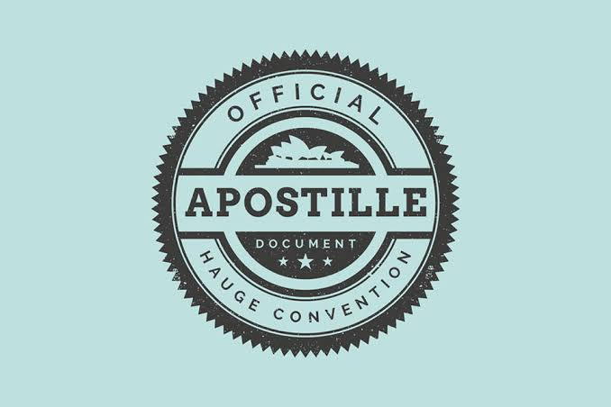

التكوين والتعليم المهنيون
طريقة التسجيل في الدخول التكويني 2026
شرح مرئي لطريقة التسجيل في الدخول التكويني وخدمات وزارة التكوين والتعليم المهنيين في الجزائر.
شروحات مختارة تساعدك على فهم خطوات التسجيل واستعمال عدد من المنصات الرقمية الرسمية. افتح صفحة المشاهدة الخاصة بالفيديو ثم انتقل إلى صفحة الخدمة لمراجعة الروابط والتفاصيل.
فيديو مرتبط بصفحة قطاع التكوين والتعليم المهنيين.
شرح مرئي لطريقة التسجيل في الدخول التكويني وخدمات وزارة التكوين والتعليم المهنيين في الجزائر.
اختر موضوعاً للانتقال إلى صفحة المشاهدة والفيديو المضمّن.
شرح مرئي للمركز الوطني لمنظومات الطائرات بدون طيار على المتن.
شرح مرئي لطريقة التسجيل في فضاء الأولياء ومتابعة الأبناء دراسياً عبر المنصة الرسمية.

شرح مرئي لطريقة التسجيل في منصة محطتي التابعة لنفطال لاقتناء العجلات المطاطية.

شرح مرئي لطريقة حجز موعد فحص المركبات عبر منصة مركبتي DZ.

شرح مرئي لطريقة طريقة التصريح بضياع الوثائق عن بعد.

شرح مرئي لطريقة التسجيل في المنصة الوطنية الرقمية للأبوستيل وتصديق الوثائق إلكترونياً.

فيديو يشرح برنامج جيل لجيل 777 للتعلم والإدماج الرقمي وتطوير المهارات عن بعد في الجزائر.
انتقل من الشرح المرئي إلى الخدمات والبيانات المرتبطة.